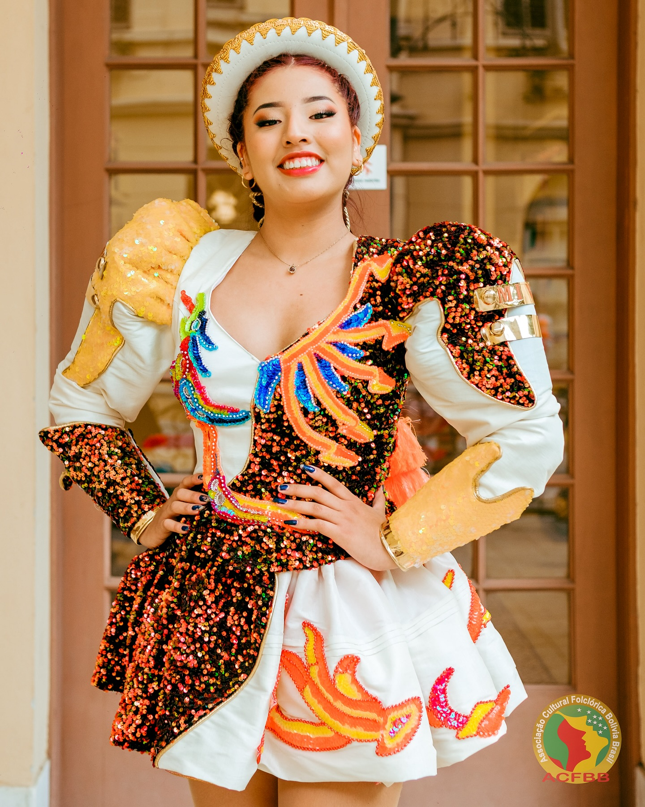
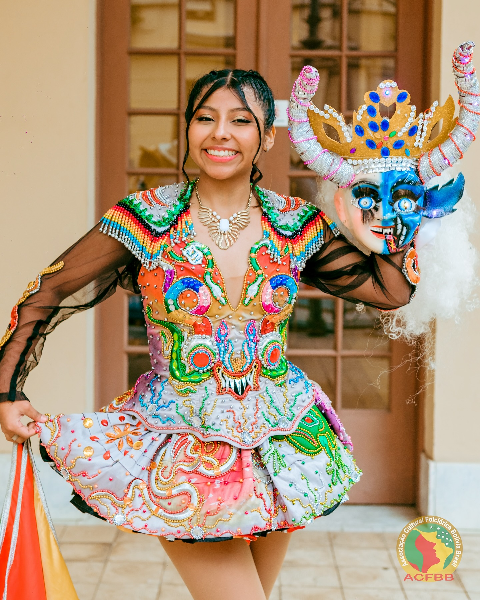
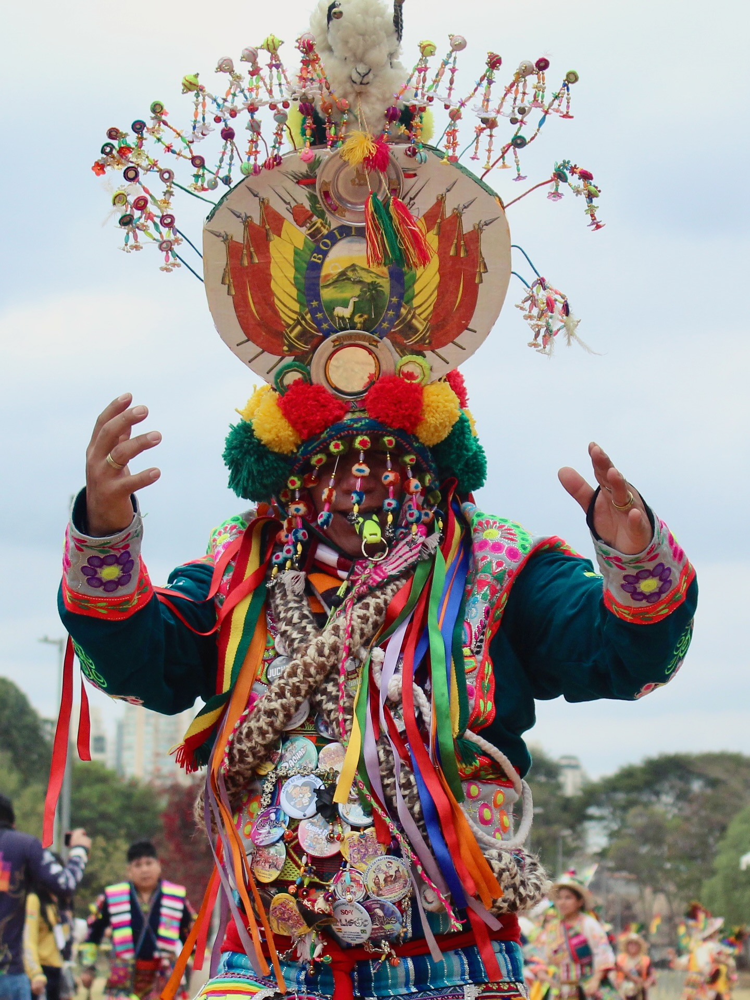

A dança é muito mais do que movimento — é uma forma de identidade e bem-estar. Segundo a Organização das Nações Unidas (ONU), atividades culturais e físicas como a dança contribuem para o desenvolvimento sustentável, promovendo saúde, inclusão e equilíbrio emocional. Dançar é celebrar a vida, é conectar corpo e alma com as raízes de um povo.
CAPORALES
Inspirada nos antigos capatazes afro-bolivianos, o Caporales simboliza força, disciplina e liderança. Surgiu na cidade de La Paz nos anos 1960 e rapidamente conquistou toda a Bolívia. O traje masculino se destaca pelo som dos sinos nas botas, representando poder e energia, enquanto as mulheres trazem elegância e brilho em cada movimento. As cores vibrantes e o ritmo acelerado da morenada expressam a alegria e o orgulho de quem dança, refletindo o espírito festivo e moderno do folclore boliviano.


DIABLADA
Uma das danças mais emblemáticas da Bolívia, a Diablada representa a luta entre o bem e o mal. Originária de Oruro, mistura elementos religiosos e mitológicos, onde os dançarinos usam máscaras de demônios e anjos em uma coreografia teatral e intensa. É uma dança de fé e espetáculo, apresentada em grandes desfiles religiosos, especialmente no Carnaval de Oruro, onde o povo rende homenagem à Virgem do Socavón.
TINKUS
O Tinkus tem origem nas comunidades andinas de Potosí e representa encontros rituais entre povos, onde se expressavam através de danças e lutas simbólicas. É uma celebração de união e força espiritual, marcada por movimentos vigorosos e energia contagiante. O traje colorido e o chullo (gorro típico) são símbolos de orgulho indígena e conexão com a Pachamama (Mãe Terra).


MORENADA
A Morenada é uma das danças mais antigas e populares da Bolívia, com origem nas minas e nos trabalhos de escravos africanos. Seus movimentos lentos e compassados simbolizam o esforço dos mineiros carregando o peso da prata. Os trajes são ricamente adornados, e as máscaras trazem feições exageradas e alegres, simbolizando a resistência e a celebração da vida.
Folclore Boliviano que ultrapssa fronteiras e conquista corações em diferentes partes do mundo.
Em diversas cidades do mundo, fraternidades e grupos folclóricos mantêm viva essa tradição, participando de eventos culturais e religiosos. Cada fraternidade é um elo entre a Bolívia e o Mundo, uma ponte de identidade, fé e arte.